If you already have a fully functioning blog, you can use scraping and the metrics from your Google Analytics to see exactly where your blog can be improved. Combining all of the data from your Google Analytics dashboard with the social shares and engagement of your blog will give you an accurate picture of exactly what you can do to grow your blog faster.
First - get the data in one place.
After, ask yourself the following questions:
- Which guest contributors create the best content on your blog? Is there a specific author that brings in more shares and views?
- Encourage your best writers to create more content and give them incentives.
- Which categories are the most popular?
- Focus your energy on topics that do well and create more content in your popular categories.
- Why do some articles have more comments and social shares?
Did you write about something eye catching, controversial or engaging?
- Brainstorm more blog post ideas based on the articles that already have a lot of comments, visits and social shares.
- Is one social media channel dominating all others?
- See where most of the social shares are coming from and find ways to promote your content on all social media streams.
- How does your content compare to similar blogs in your industry?
- Run the same analysis that you do for your blog, on competing blogs. Find our what makes certain articles popular for leading blogs in your space.
Step 1: Get metrics for all of your blog posts
First, open up your Google Analytics account and go to Behavior > Site Content > All Pages.
You will need the following metrics for each blog post from Google Analytics:
- Page titles
- Entrance
- Pageviews - total
- Pageview per session
- Unique Pageviews
- Average time on page
I will show you how to get this data automatically into Google Sheets in Step 2.
Secondly, you will need to add a few more blog performance metrics such as:
- Facebook shares, likes and comments
- Twitter shares
- LinkedIn shares
- Google + shares
- Post comments
- Author
- Tags and categories
I will show you how to do this in Step 3 with ParseHub, SharedCount, web scraping and automation.
Step 2: Bring Google Analytics data into Google Sheets
Let’s use the Google Analytics add-on to automatically bring in all of the metrics for our blog into a Google Sheets. Later, we will add the data we scrape from your blog to the same Google Sheet, for one accurate view of your blogs performance.
Open up a blank Google Docs spreadsheet by creating one right from your Google Drive. From the tabs at the top, select Add-ons and Get add-ons.
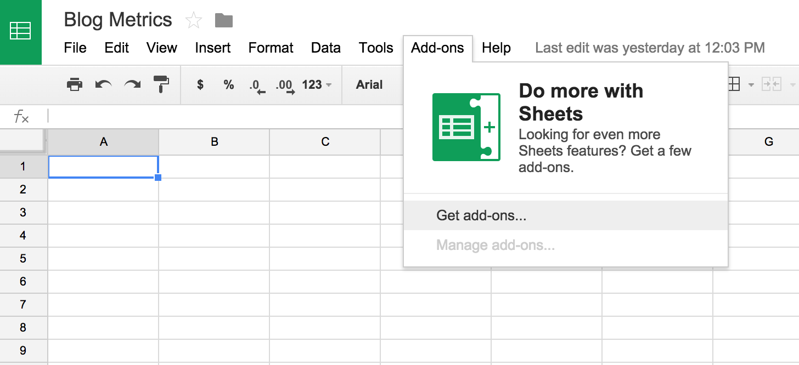
In the pop-up, search for "Google Analytics". Click on the first search result to install it and click Accept right after.
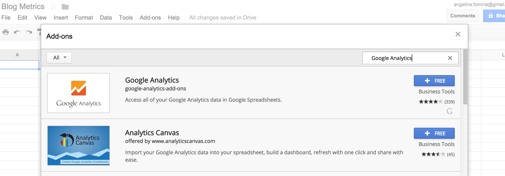
Now, back in your Google Sheet, select Add-ons > Google Analytics > Create new report.
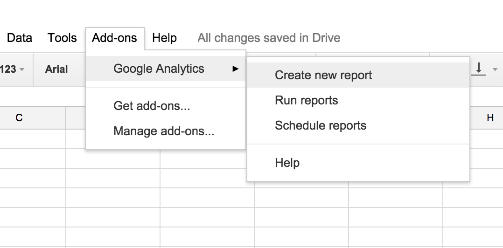
A form will appear on the right, that we need to fill out to generate a new report. You can select the property and the view to report on.
Secondly, fill in the optional Metrics - under Page Tracking: select Entrance, Pageviews, Pages/Session, Unique Pageviews and Avg. Time on Page.
Now, add the optional Dimensions - under Page Tracking: select Page Title.
Here is the full list of the dimensions and metrics that you can choose from. What we selected is enough to analyze the performace of your blog.
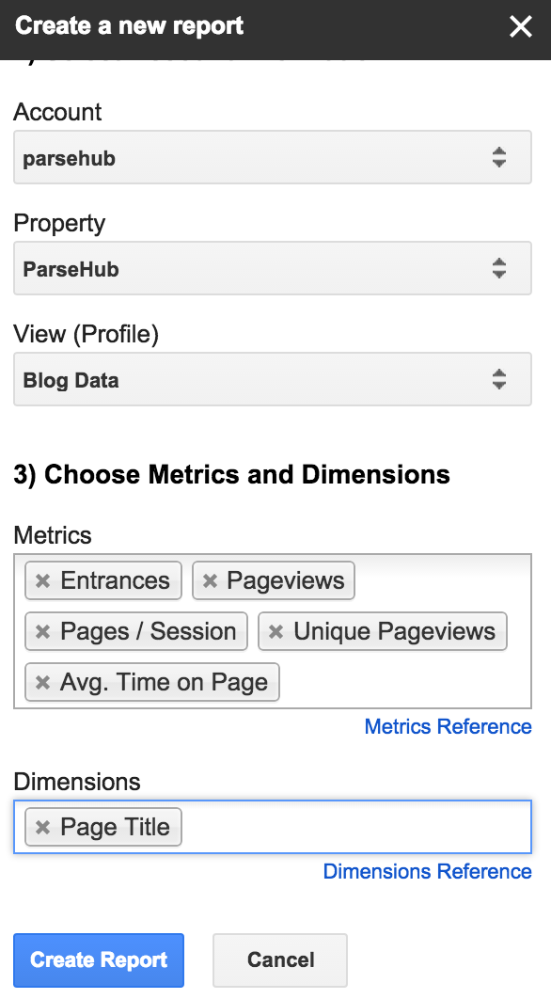
Click Create Report and your Sheet should look like the reference below. You can change the number of days that you want to view data for in the Last N Days cell. I changed it to report on metrics for the last 30 days.
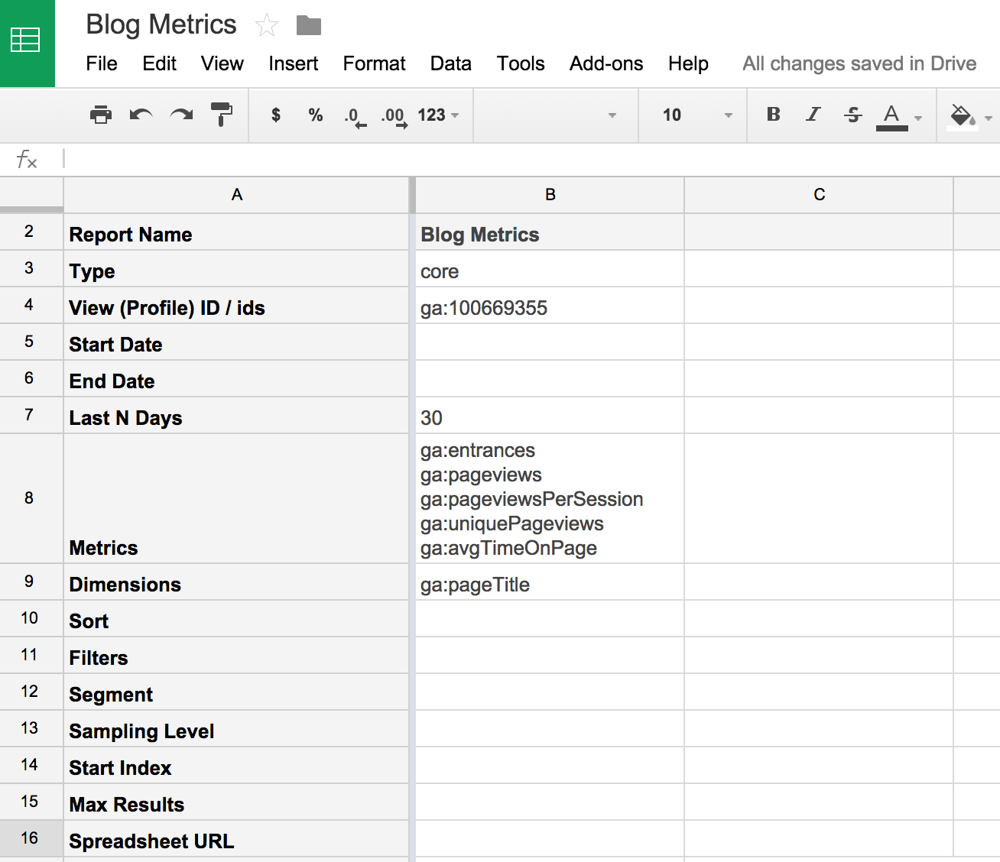
To run your report select Add-ons > Google Analytics > Run reports. The new report will appear in a seperate tab for you to view. Now, all you have to do is run this report whenever you need
the data or schedule to run it monthly.
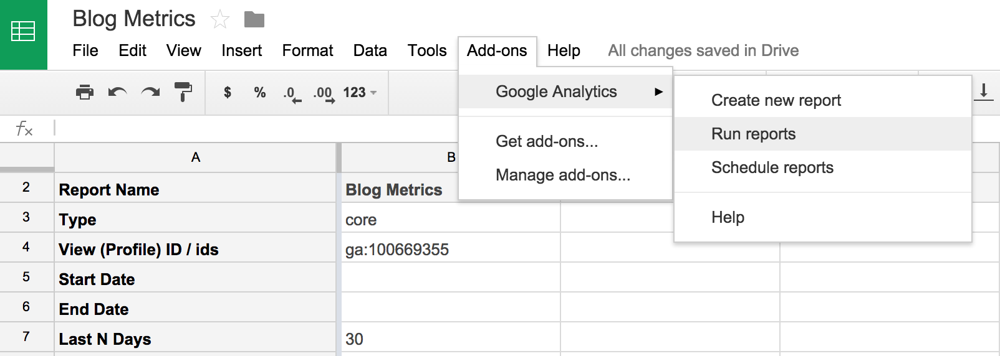
Now you can copy the metrics that you get from this report and add them together with the metrics that we will scrape from the blog social shares.
Step 3: Find and scrape the number of social shares for each blog post
There are two ways you can find out how many times each one of your articles was shared on social media.
Option 1. Get the social share counts from your blog
If you have a plug-in that displays the number of times each post was shared, you can easily scrape this information for all of the blog posts on your website.
Option 2. Get the social sharing numbers from SharedCount
You can also get the links for each blog post, and enter those links automatically into SharedCount that will display the social media stats for each blog post.
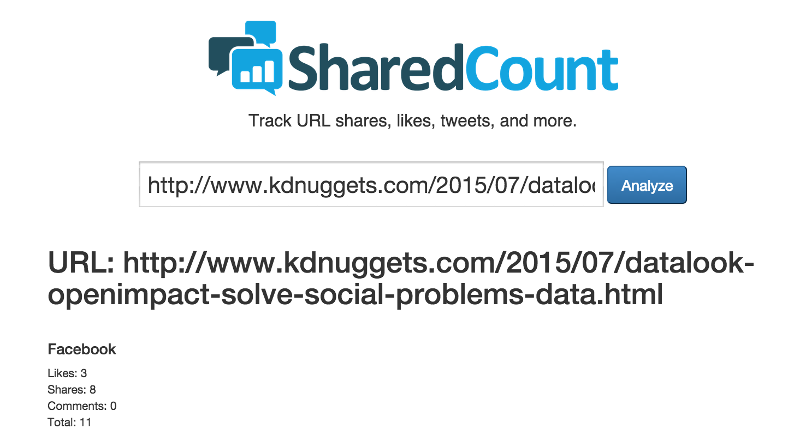
We will use KDNuggets as an example and guide you through both of these options in two tutorials below. You can use the steps below to scrape your blog too.
Option 1: Scrape the social share counts from each article
- Open up the ParseHub web scraping application
- Go to http://www.kdnuggets.com/2015/06/index.html
- Click "New Project" and "Start project on this URL" get started.
Let’s select all of the articles on the page and navigate to the full articles.
- Select the first article by clicking on it.
- Select the rest of the articles by clicking on the next one. The name and URL of each one will be extracted, in their own CSV row or JSON scope.
- Rename the selection articles.
- Click on the "plus" button next to the command "Begin new entry in articles" to open up the command menu, and choose the Relative Select tool.
- Click on one of the article titles. Now, hover over the date of the article and click on it. All of the dates for all of the articles will be selected and extracted for you.
I notice that each one of the dates has a dash before the date, which I would like to get rid of. I can do this by adding an Extract command, and choosing to Use regex. To extract only the date I enter:
-\ (.*)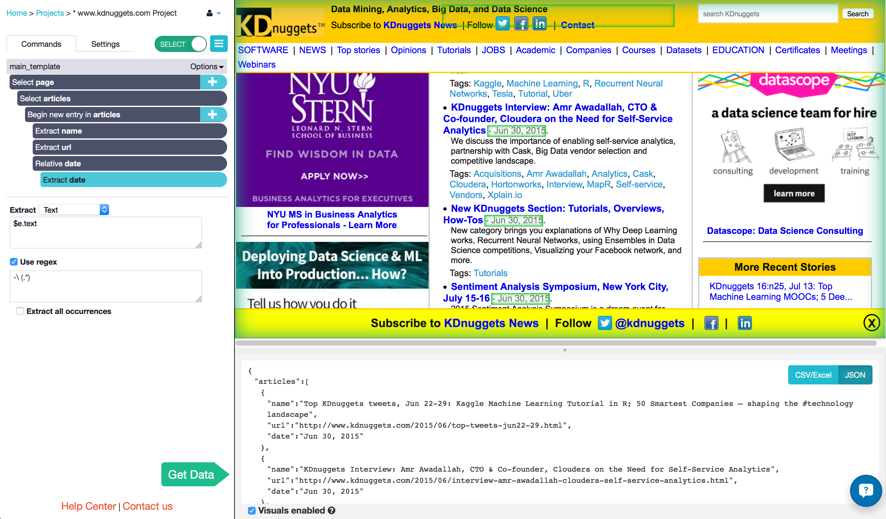
- Click on the "plus" button next to "Begin new entry in articles" once again, and add a Click command.
Choose to Create New Template and name it details. You will be taken to the first article on the page. Everything you do on this template will apply to every article that we selected on the previous template
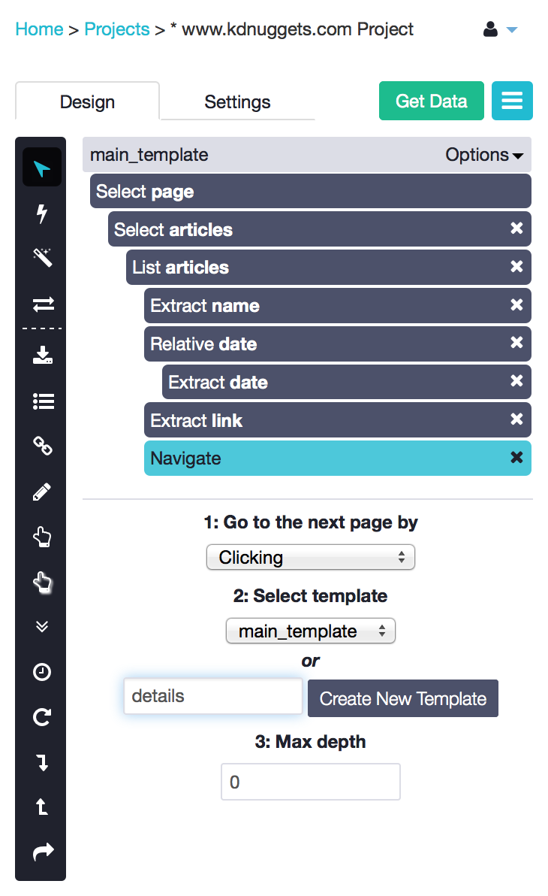
- Let’s select and extract the share counts for this specific article. With the Select tool, click on the number beside the “Google Plus” share icon.
Add another Select command from the "plus" button next to "Select page", and click on the number beside the orange “Share” icon.
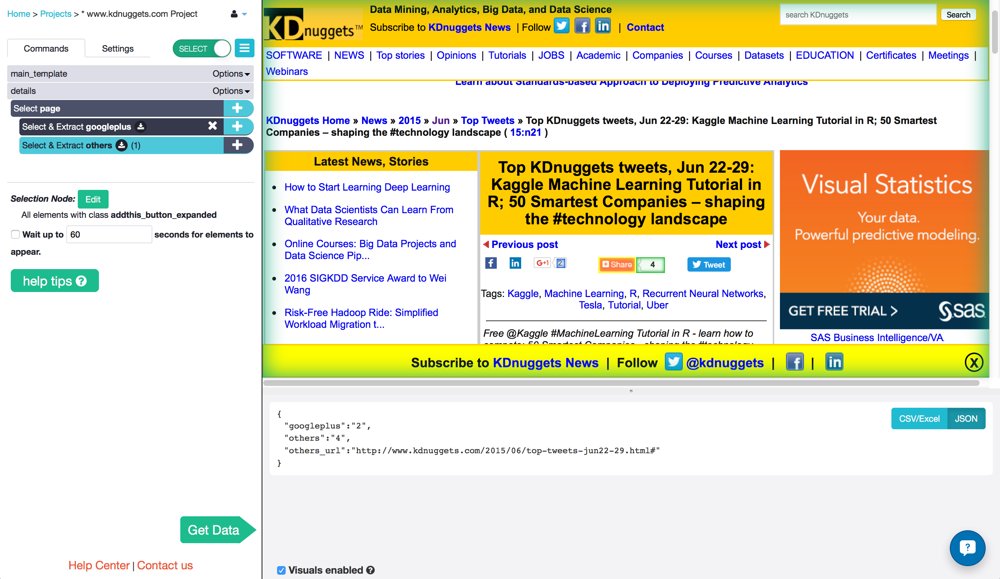
Run your project and download the data!
- Click on the Get Data button at the top right of the project design tab.
- Click "Run" and "Save and Run"
- Wait a few minutes and refresh the page. Download your results in JSON or CSV.
You can also interact with the ParseHub REST API with your run token and your API key.
Option 2: Automate, entering hundreds of links from your blog into SharedCount to get the social shares
- Open up the ParseHub extension
- Go to http://www.kdnuggets.com/2015/06/index.html
- Click New Project to get started
Select all of the articles on the page and navigate to the full articles.
- Select the first article by clicking on it.
- Select the rest of the articles by clicking on the next one.
Rename the selection articles. The name and URL of each one will be extracted, in their own CSV row or JSON scope.
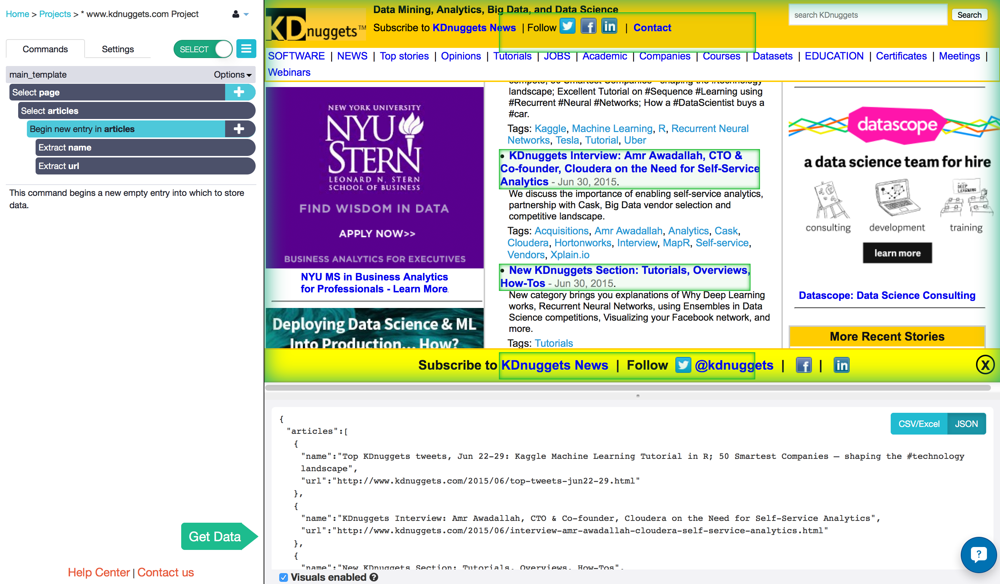
- Click on the "plus" button next to the "Begin new entry in articles command and open the Advanced menu. Select the Go To Template command.
- Choose to Go to URL and enter the SharedCount website, in quotations: "https://www.sharedcount.com/"
- Create New Template and call it sharedcount.
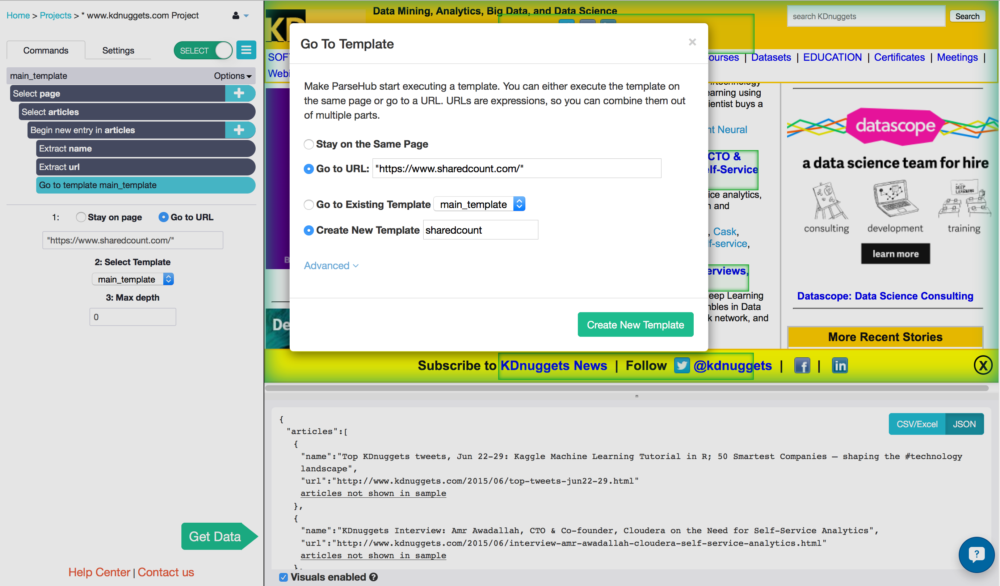
Now you will enter the article links into SharedCount and extract all of the social sharing data.
- Click on the search box to select it.
- With the Input command, enter link into the input text box and change the Input type from "text" to "expression. Remember the how we extracted all of the links from the previous page, on the main_template? Now, we are telling ParseHub to take the actual url for each article and enter it into the text box.
Change the name of the selection to search_bar.
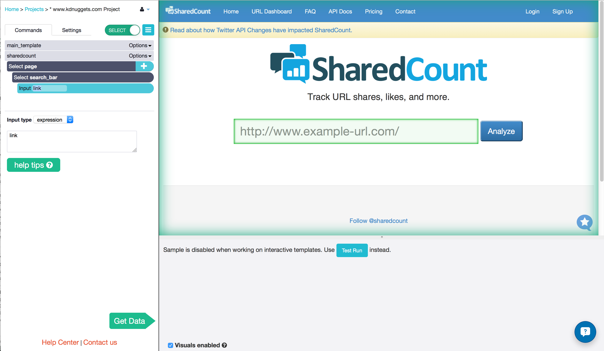
- Let’s click on the button to make the results appear. First, let’s enter a real url example into the text box. Activate the browse mode using the slider at the top of the ParseHub toolbar. Type in - http://www.kdnuggets.com/jobs/15/07-17-manh-operations-research-analyst-data-scientist.html
- Change back to select mode and add a Select command from the "plus" button next to "Select page".
- Click on the "Analyze" button to select it and rename the selection search.
- Click on the "plus" button next to "Select search" add a Click command. Notice how a new page is not loaded for the results, and they appear right away. Choose to Continue executing the current template.
- Add a Wait command and choose to Wait 2 seconds. This is to allow the page to load every time.
- Add a Select command and scroll down. You can select any of the shares that you would like. I selected the number of facebook shares, google plus shares and linkedin shares and named them fbshares, gpshares, and inshares. ParseHub will extract this data from all of the links from your starting page!
- Once you are happy, run your project and download the data!
- Click on the "Get Data" button at the top right of the project design tab.
- Save the project and "Run"
- Wait a few minutes and refresh the page. Download your results in JSON or CSV
- You can also interact with the ParseHub REST API with your run token and your API key.
Option 3: Get social shares from your blog and SharedCount in one project
In one ParseHub project you can get both the social shares from your blog and from SharedCount.
First, follow the steps from the "Option 1" section of this tutorial. Select all of the articles on the main page and navigate to the article. Get the social shares from the actual article by selecting and extracting the number.
Secondly, follow the steps from the "Option 2" section of this tutorial. Use the Go To Template command. In the text box add the url to the SharedCount website in quotation marks and create a new template. When ParseHub navigates to the SharedCount website make sure to search for each article and get the social shares.
When you combine the two projects from “Option 1” and “Option 2” of this tutorial, into one project your downloaded data should look something like this:
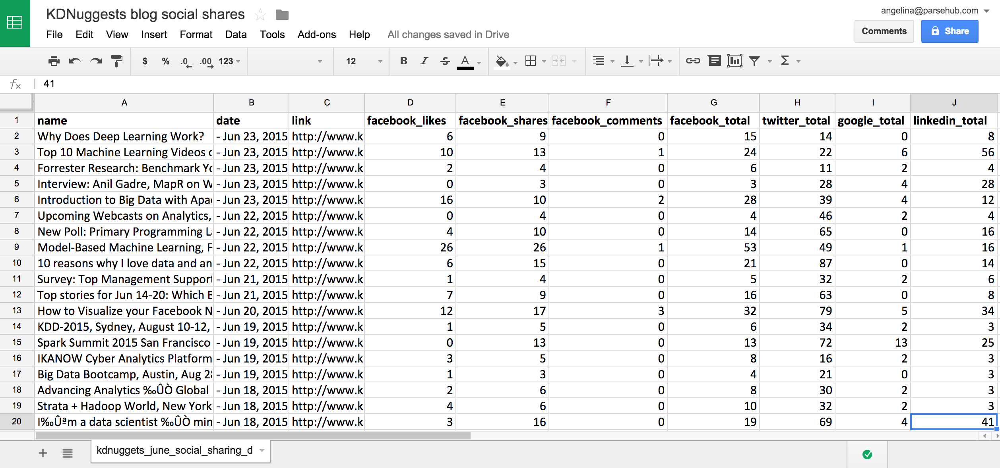
Happy data-hunting!
Need help with this tutorial? Contact us here at anytime! Ask for Angelina, and I'll help you out.
blog 9 google analytics, blog social shares and scraping